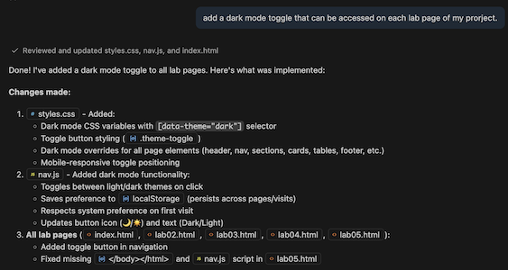
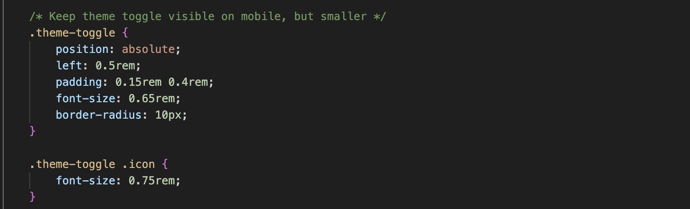
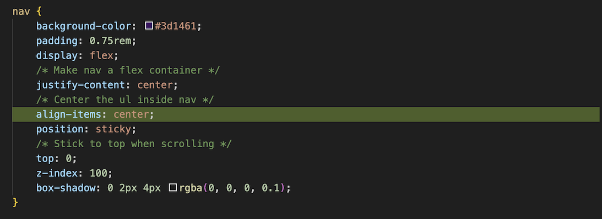
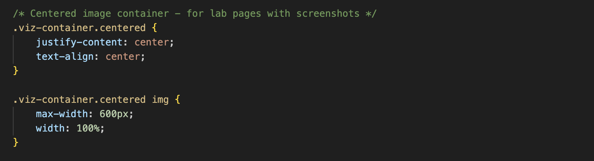

Introduction
In Lab 5, I set up my Lab 5: Vibe Coding HTML page as I had prior. Since I know how to properly set up a page, no AI assistance was needed. Previously, in class, when I asked the AI tool to scan my project, I found that some of my pages were not linking properly. From that previous AI response, when working in "plan" mode, I went through and tried to fix in myself. Since these were small errors and easy to fix, I didn't use AI assitance to fix the linking errors. I also previously added a hamburger to menu trop down, accesible within each page, for better mobile use function, using AI assitance.
Experiment A: Portfolio Enhancement
To enhance my portfolio, I first asked AI to understand my project as a whole and scan it using the AI plan feature. Once it understood my portfolio, I used the AI agent feature to prompt it to add a dark mode toggle to my portfolio. This dark mode toggle allows users to switch between light and dark modes by clicking their perferred mode.

Further Edits
The AI placed the toggle in the middle on certain pages and or towards the left depending on the screen view. To make my pages more consistant I prompted the AI: "can you place the dark mode toggle on the far left." I then asked the AI to make the toggle smaller so it would not be as distracting at the top of my pages. I also asked the AI to make the toggle smaller on mobile view as well.

Experiment C: Debug with AI
I noticed that the different lab assignment navigation tabs were, placed on the top of the page within the website browser, were placed on the right hand side. I found this placement to be distracting, so I asked AI to move them to the center of the page. I prompted: "can you place the navigation links to each lab assignment at the top of the page in the center." The AI helped me adjust the CSS file to move the navigation links to the center of the page, making it more user-friendly and consistent with my design goals.
I also wanted to alter my images so that each on was centered on my page and that certain ones were larger. This change makes my portfolio more visually appealing and easier to read. I promtped: "can you conter all of my images within lab05.html. also make each image the same width as centeralign.png." Consequently it also changed my image settings on my "Home" page even though the AI was not prompted to. I learned that adding a simple word like "centered" after "viz-container" in the HTML and then adjusting the CSS accordingly is an easy way to make changes to my design. I then manually changed my "Home" page image so it would be the correct size and layout after learning what the AI showed me. I also manually changed the Lab 5 centered image size within my CSS to make the images wider. After seeing where the settings were in CSS it was easy to continue to adjust the image size.


Reflection
Overall, using AI assistance in my portfolio helped me understand the CSS settings better an dhow to make small changes that have a big impact on the layout of the page. I found it helpful for spotting errors and easily fixing them. I also feel more knowledgable and confident to change things on my own after using the plan and agent AI tools.